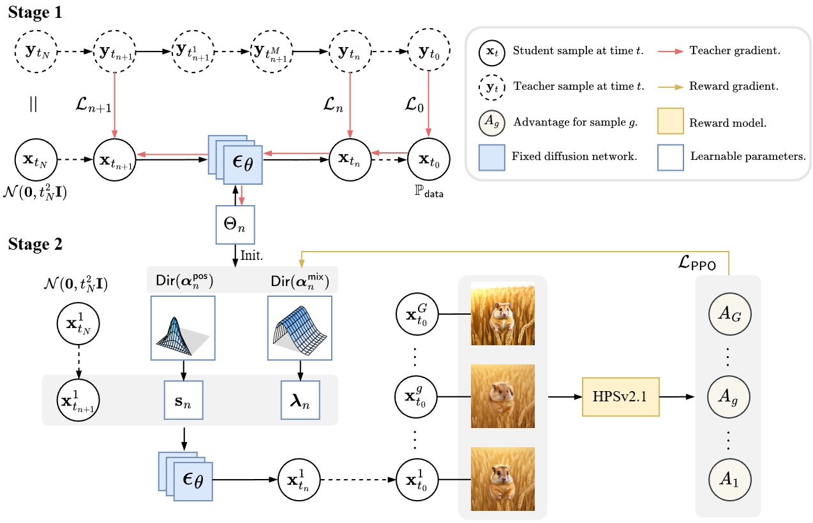

Visual Results
Results on Stable Diffusion v1.5

Results on SD3-Medium (512x512)

Results on SD3-Medium (1024x1024)

Diffusion models (DMs) have achieved state-of-the-art generative performance but suffer from high sampling latency due to their sequential denoising nature. Existing solver-based acceleration methods often face significant image quality degradation under a low-latency budget, primarily due to accumulated truncation errors arising from the inability to capture high-curvature trajectory segments.
In this paper, we propose the Ensemble Parallel Direction solver (EPD-Solver), a novel ODE solver that mitigates these errors by incorporating multiple parallel gradient evaluations in each step. Motivated by the geometric insight that sampling trajectories are largely confined to a low-dimensional manifold, EPD-Solver leverages the Mean Value Theorem for vector-valued functions to approximate the integral solution more accurately. Importantly, since the additional gradient computations are independent, they can be fully parallelized, preserving low-latency sampling nature.
We introduce a two-stage optimization framework. Initially, EPD-Solver optimizes a small set of learnable parameters via a distillation-based approach. We further propose a parameter-efficient Reinforcement Learning (RL) fine-tuning scheme that reformulates the solver as a stochastic Dirichlet policy. Unlike traditional methods that fine-tune the massive backbone, our RL approach operates strictly within the low-dimensional solver space, effectively mitigating reward hacking while enhancing performance in complex text-to-image (T2I) generation tasks.
Extensive experiments demonstrate the effectiveness of EPD-Solver. On validation benchmarks, at the same latency level of 5 NFE, the distilled EPD-Solver achieves state-of-the-art FID scores of 4.47 on CIFAR-10, 7.97 on FFHQ, 8.17 on ImageNet, and 8.26 on LSUN Bedroom. On T2I benchmarks, our RL-tuned EPD-Solver significantly improves human preference scores on both Stable Diffusion v1.5 and SD3-Medium. Notably, it outperforms the official 28-step baseline of SD3-Medium with only 20 steps.
Our method consists of two stages: (1) Distillation-Based Parameter Optimization, where we optimize learnable solver parameters to approximate high-precision teacher trajectories; and (2) Residual Dirichlet Policy Optimization, where we reformulate the solver as a stochastic policy and optimize it using RL to align with human preferences.

@article{wang2025parallel,
title={Parallel Diffusion Solver via Residual Dirichlet Policy Optimization},
author={Wang, Ruoyu and Li, Ziyu and Zhu, Beier and Yuan, Liangyu and Zhang, Hanwang and Yang, Xun and Chang, Xiaojun and Zhang, Chi},
journal={arXiv preprint},
year={2025}
}